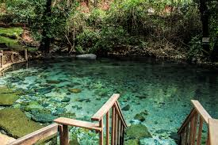
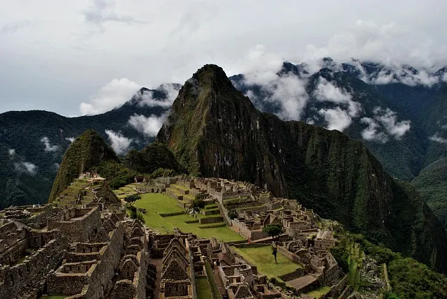
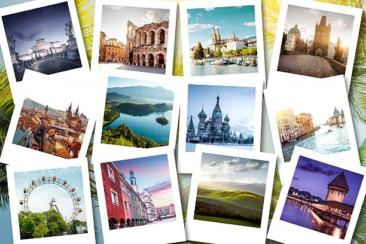
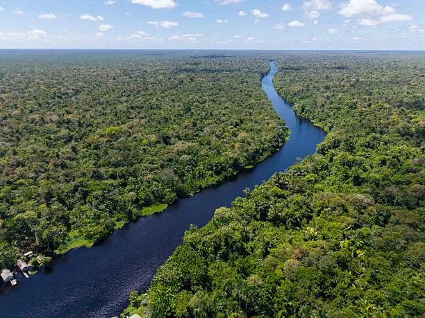

.png)
Nossas Expedições 2026
Viagens criadas especialmente para mulheres que querem viver o mundo com coragem, presença e pertencimento.
Todos os roteiros são cuidadosamente planejados para unir segurança, acolhimento, vivências afetivas e experiências inesquecíveis — sempre com liderança feminina e grupos pequenos.
Como funcionam nossas expedições
- Grupos femininos intimistas
- Guia da agência presente durante toda a experiência
- Logística organizada nos mínimos detalhes
- Preparação pré-viagem + encontro virtual
- Apoio emocional durante todo o processo
- Roteiros autorais e afetivos
- Pagamento facilitado conforme o destino
👉 Saiba mais em "Como funciona".
.webp)
Itacaré (BA) | Fevereiro 2026
Para mulheres que precisam respirar, desacelerar e voltar ao corpo.
Itacaré é uma experiência de reconexão.
Natureza, calma, brisa, água salgada, trilhas leves e dias que devolvem presença.
Perfeito para mulheres que:
- querem começar o ano mais leves
- precisam de uma pausa emocional
- desejam primeiro destino em grupo
- querem uma viagem íntima e acolhedora

Buenos Aires + Uruguai | Março 2026
Para quem quer renascer pela arte, beleza e liberdade.
Uma viagem que mistura cultura, gastronomia, caminhadas leves, paisagens costeiras e respiros emocionais — perfeita para recoços.
Para mulheres que:
- querem viajar internacionalmente pela primeira vez
- amam cultura, música e arquitetura
- querem profundidade com leveza
- buscam uma viagem transformadora e segura

Chapada dos Veadeiros | Abril 2026
Para mulheres em expansão, cura e coragem.
A Chapada é um dos nossos destinos mais afetivos.
Uma viagem de virada, força e beleza. Lugar de decisões, libertações e reconexão com o próprio eixo.
Para mulheres que:
- querem uma viagem que realmente mexa por dentro
- buscam natureza, trilhas e água pura
- querem grupos acolhedores
- querem renascer

Jalapão (TO) | Maio 2026
Para mulheres que querem redescobrir sua força interna e externa.
Cânions, fervedouros, estradas, poços cristalinos e uma energia bruta que devolve potência.
Ideal para:
- mulheres em virada de ciclo
- quem quer provar sua força para si mesma
- quem busca aventura com segurança
- quem precisa de um choque de presença

Peru | Junho 2026
Para mulheres que buscam espiritualidade, presença e transformação.
Peru é uma viagem de profundidade.
Cultura, energia ancestral, história e uma força silenciosa que abre caminhos internos.
Perfeito para mulheres que:
- estão vivendo mudanças profundas
- querem uma experiência espiritual segura e leve
- desejam viajar internacionalmente com suporte
- querem viver algo inesquecível

Lençóis Maranhenses | Julho 2026
Para quem deseja leveza, beleza e reconexão com a natureza.
Lagoas azul turquesa, dunas, silêncio, vento, simplicidade e a sensação de que a vida pode, sim, ser mais leve.
Para mulheres que:
- querem descanso emocional
- buscam beleza natural única
- desejam uma viagem para respirar
- querem se reencontrar
.webp)
Ilhabela (Baleias) | Agosto 2026
Para mulheres que querem viver a natureza de forma intimista e segura.
Observação de baleias, trilhas leves, mar calmo, paz e pertencimento feminino.
Perfeito para:
- quem quer algo mais íntimo
- quem gosta de natureza e calmaria
- quem busca conexão e acolhimento

Eurotrip Delas | Setembro 2026
Para mulheres que querem viver o mundo — com pertencimento e suporte.
Uma experiência internacional de 17 dias por múltiplos países, criada exclusivamente para mulheres que desejam liberdade com segurança.
Para mulheres que:
- querem viver o sonho da Europa
- desejam viajar com grupo seguro
- buscam história, cultura e beleza
- querem uma viagem longa e transformadora

Amazônia | Outubro 2026
Para quem busca uma experiência profunda com natureza, cultura e ancestralidade.
Vivência imersiva, comunidade ribeirinha, floresta, rios, silêncio, cura e força.
Para mulheres que:
- amam natureza bruta
- buscam algo verdadeiramente diferente
- querem presença e profundidade

Chapada dos Veadeiros | Novembro 2026
Nossa viagem de encerramento do ano — para mulheres que querem fechar ciclos com verdade.
A Chapada é onde muitas mulheres entendem sua própria força.
Nossa última viagem do ano tem um simbolismo especial.
👉 Garantir vagaEntre para a lista de espera das viagens mais desejadas de 2026.
Receba abertura antecipada, prioridade nas vagas e condições especiais.
👉 Entrar para a lista de espera